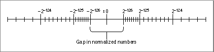
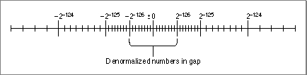
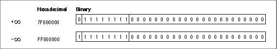
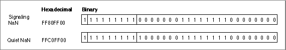
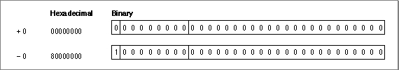

Legacy Document
Important: The information in this document is obsolete and should not be used for new development.
Important: The information in this document is obsolete and should not be used for new development.


Interpreting Floating-Point Values
Regardless of which data format (single, double, or double-double) you use, the numerics environment uses the same basic method to interpret which floating-point value the data format represents. This section describes that method.Every floating-point data format has a sign bit, an exponent field, and a fraction field. These three fields provide binary encodings of a sign (+ or -), an exponent, and a significand, respectively, of a floating-point value. The value is interpreted as
where
In a numeric data format, each valid representation belongs to exactly one of these classes, which are described in the sections that follow:
- \xB1
- is the sign stored in the sign bit (1 is negative, 0 is positive).
- significand
- has the form where are
the bits in the fraction field and is an implicit bit whose value is interpreted as described in the sections "Normalized Numbers" and "Denormalized Numbers." The significand is sometimes called the mantissa.- exponent
- is the value of the exponent field.
- bias
- is the bias of the exponent. The bias is a predefined value (127 for single format, 1023 for double and double-double formats) that is added to the exponent when it is stored in the exponent field. When the floating-point number is evaluated, the bias is subtracted to return the correct exponent. The minimum biased exponent field (all 0's) and maximum biased exponent field (all 1's) are assigned special floating-point values (described in the next several sections).
- normalized numbers
- denormalized numbers
- Infinities
- NaNs (signaling or quiet)
- zeros
Normalized Numbers
The numeric data formats represent most floating-point numbers as normalized numbers, meaning that the implicit leading bit ( on page 2-4) of the significand is 1. Normalization maximizes the resolution of the data type and ensures that representations are unique. Figure 2-2 shows the magnitudes of normalized numbers in single precision on the number line. The spacing of the vertical marks indicates the relative density of numbers in each binade. (A binade is a collection of numbers between two successive powers of 2.) Notice that the numbers get more dense as they approach 0.
Figure 2-2 Normalized single-precision numbers on the number line
- Note
- The figure shows only the relative density of the numbers; in reality, the density is immensely greater than it is possible to show in such a figure. For example, there are (8,388,608) single-precision numbers in the interval .


Using only normalized representations creates a gap around the value 0, as shown in Figure 2-2. If a computer supports only the normalized numbers, it must round all tiny values to 0. For example, suppose such a computer must perform the operation , where x and y are very close to, but not equal to, each other. If the difference between x and y is smaller than the smallest normalized number, the computer must deliver 0 as the result. Thus, for such flush-to-zero systems, the following statement is not true for all real numbers:
Denormalized Numbers
Instead of using only normalized numbers and allowing this small gap around 0, PowerPC processor-based Macintosh computers use denormalized numbers, in which the leading implicit bit ( on page 2-4) of the significand is 0 and the minimum exponent is used.
Figure 2-3 illustrates the relative magnitudes of normalized and denormalized numbers in single precision. Notice that the denormalized numbers have the same density as the numbers in the smallest normalized binade. This means that the roundoff error is the same regardless of whether an operation produces a denormalized number or a very small normalized number. As stated previously, without denormalized numbers, operations would have to round tiny values to 0, which is a much greater roundoff error.
- Note
- Some references use the term subnormal numbers instead of denormalized numbers.
Figure 2-3 Denormalized single-precision numbers on the number line

To put it another way, the use of denormalized numbers makes the following statement true for all real numbers:
if and only if
Another advantage of denormalized numbers is that error analysis involving small values is much easier without the gap around zero shown in Figure 2-2 (Demmel 1984).
The computer determines that a floating-point number is denormalized (and therefore
that its implicit leading bit is interpreted as 0) when the biased exponent field is filled
with 0's and the fraction field is nonzero.Table 2-2 shows how a single-precision value becomes progressively denormalized as it is repeatedly divided by 2, with rounding to nearest. This process is called gradual underflow. In the table, values are denormalized; is the smallest positive denormalized number in single format. Notice that as soon as the values are too small to be normalized, the biased exponent value becomes 0.
Table 2-2 Example of gradual underflow Variable or operation Value Biased exponent Comment 1.100 1100 1100 1100 1100 1101 2 1.100 1100 1100 1100 1100 1101 1 0.110 0110 0110 0110 0110 0110 0 Inexact[4] 0.011 0011 0011 0011 0011 0011 0 Exact result 0.001 1001 1001 1001 1001 1010 0 Inexact[4] . . . 0.000 0000 0000 0000 0000 0011 0 Exact result 0.000 0000 0000 0000 0000 0010 0 Inexact[4] 0.000 0000 0000 0000 0000 0001 0 Exact result 0.0 0 Inexact[4] Infinities
An Infinity is a special bit pattern that can arise in one of two ways:
These bit patterns (as well as NaNs, introduced next) are recognized in subsequent operations and produce predictable results. The Infinities, one positive and one negative, generally behave as suggested by the theory of limits. For example:
- When an operation (such as ) should produce a mathematical infinity, the result is an Infinity.
- When an operation attempts to produce a number with a magnitude too great for the number's intended floating-point data type, the result might be a value with the largest possible magnitude or it might be an Infinity (depending on the current rounding direction).
The computer determines that a floating-point number is an Infinity if its exponent field is filled with 1's and its fraction field is filled with 0's. So, for example, in single format, if the sign bit is 1, the exponent field is 255 (which is the maximum biased exponent for the single format), and the fraction field is 0, the floating-point number represented is (see Figure 2-4).
- Adding 1 to +
yields +
- Dividing by +0 yields .
- Dividing 1 by yields .
Figure 2-4 Infinities represented in single precision

NaNs
When a numeric operation cannot produce a meaningful result, the operation delivers a special bit pattern called a NaN (Not-a-Number). For example, zero divided by zero, +NaNs propagate through arithmetic operations. Thus, the result of 3.0 added to a NaN is the same NaN. If two operands of an operation are NaNs, the result is one of the NaNs. NaNs are of two kinds: quiet NaNs, the usual kind produced by floating-point operations, and signaling NaNs.
When a signaling NaN is encountered as an operand of an arithmetic operation, the invalid-operation exception is signaled and a quiet NaN is the delivered result. Signaling NaNs are not created by any numeric operations, but you might find it useful to create signaling NaNs manually. For example, you might fill uninitialized memory with signaling NaNs so that if one is ever encountered in a program, you will know that uninitialized memory is accessed.
A NaN may have an associated code that indicates its origin. These codes are listed in Table 2-3. The NaN code is the 8th through 15th most significant bits of the fraction field.
The computer determines that a floating-point number is a NaN if its exponent field is filled with 1's and its fraction field is nonzero. The most significant bit of the fraction field distinguishes quiet and signaling NaNs. It is set for quiet NaNs and clear for signaling NaNs. For example, in single format, if the sign field has the value 1, the exponent field has the value 255, and the fraction field has the value 65,280, then the number is a signaling NaN. If the sign is 1, the exponent is 255, and the fraction field has the value 4,259,584 (which means the fraction field has a leading 1 bit), the value is a quiet NaN. Figure 2-5 illustrates these examples.
- Note
- The PowerPC processor always returns 0 for the NaN code.
Figure 2-5 NaNs represented in single precision

Zeros
Each floating-point format has two representations for zero: +0 and . Although the two zeros compare as equal , their behaviors in IEEE arithmetic are slightly different.Ordinarily, the sign of zero does not matter except (possibly) for a function discontinuous at zero. Though the two forms are numerically equal, a program can distinguish +0 from by operations such as division by zero or by performing the numeric copysign function.
The sign of zero obeys the usual sign laws for multiplication and division. For example, and . Because extreme negative underflows yield , expressions like produce the correct sign for
When rounding downward, with x finite,
The square root of is .
The sign of zero is important in complex arithmetic (Kahan 1987).
The computer determines that a floating-point number is 0 if its exponent field and its fraction field are filled with 0's. For example, in single format, if the sign bit is 0, the exponent field is 0, and the fraction field is 0, the number is +0 (see Figure 2-6).
Figure 2-6 Zeros represented in single precision

[4] Whenever division returns an inexact tiny value, the exception bit for underflow is set to indicate that a low-order bit has been lost.